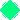

操作方法
・矢印キー ：移動
・zキー：通常ショット（近接攻撃）
・xキー：特殊ショット（長距離貫通攻撃）
チェイン
通常攻撃を連続して成功させると画面左下のがに変化していきます。
が6個たまると、画面右下にが追加されます。
特殊ショット（xキー）
特殊ショット利用すると、画面右下のを1つ消費します。
得点ボーナス
通常ショットが成功した場合、×1のボーナスポイントが加算されます。
特殊ショットが成功した場合、×2のボーナスポイントが加算されます。
興味のある方はどうぞ→coffeescriptのコード